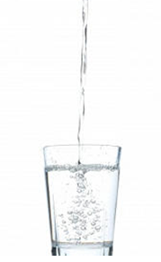

El poder del gas
Para este sencillo experimento necesitarás los siguientes materiales:
- Un vaso de cristal.
- Agua mineral con gas (o en su defecto agua y una aspirina efervescente o similar como vitaminas)
- Una pasa pequeña.

Procedimiento:
Introduce la pasa seca en el vaso con agua mineral con gas (o con agua en la que previamente has disuelto una aspirina efervescente o similar).
Podrás observar que al principio la pasa, debido a su propio peso se va hacia el fondo. Pero al poco tiempo observa como sube a la superficie para volver a bajar.
¡Arriba y abajo! como un auténtico yo-yo.
Explicación:
La pasa no se ha vuelto loca, lo que ocurre es que las burbujas del agua mineral (anhídrido carbónico) se pegan a la pasa cuando está en el fondo del vaso y la suben a la superficie. En la superficie, las burbujas pierden su "agarre" (el gas se disipa en el aire) y la pasa vuelve a caer al fondo debido a su peso. El proceso se repetirá hasta que se disipe todo el gas en la superficie.